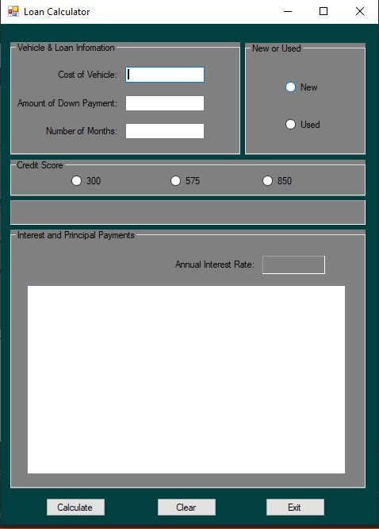
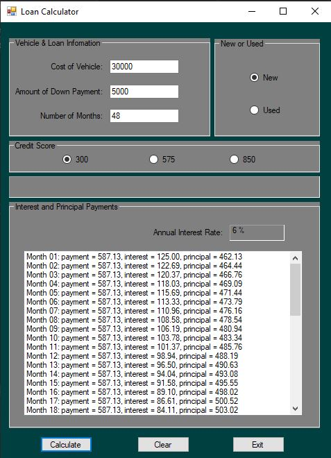
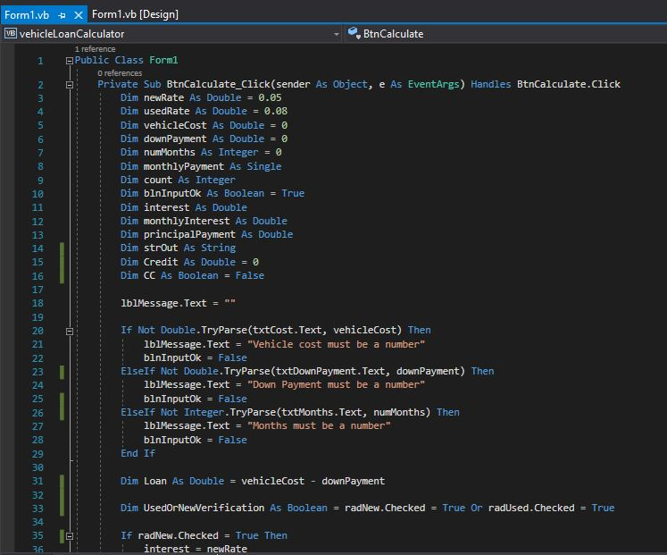
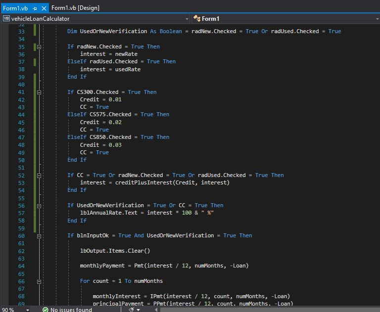
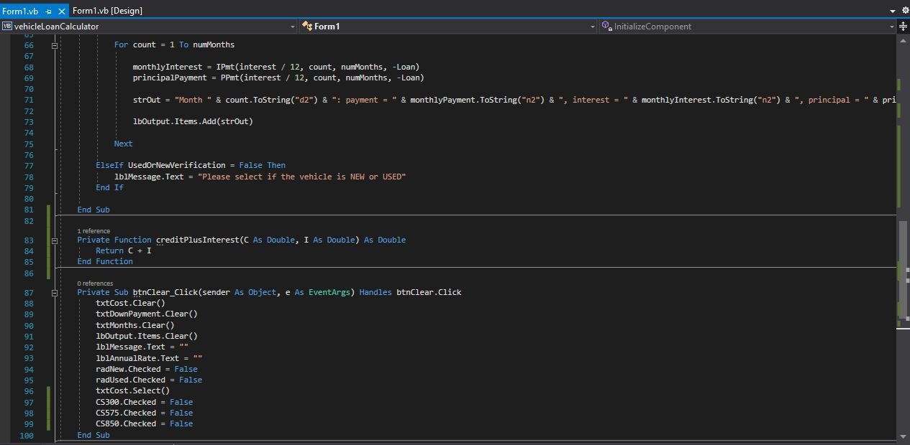
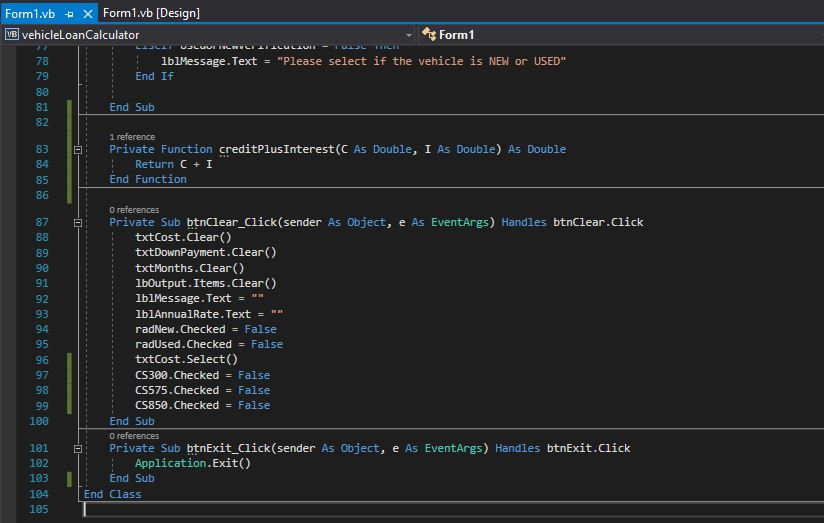

Se creó una calculadora de préstamo de pago de un vehículo. El programa toma en cuenta factores como el costo del vehículo, el periodo, el préstamo y si el vehículo es nuevo o usado y también puntuación de crédito. Todos estos factores se utilizan para calcular la mensualidad hasta la duración del periodo.





